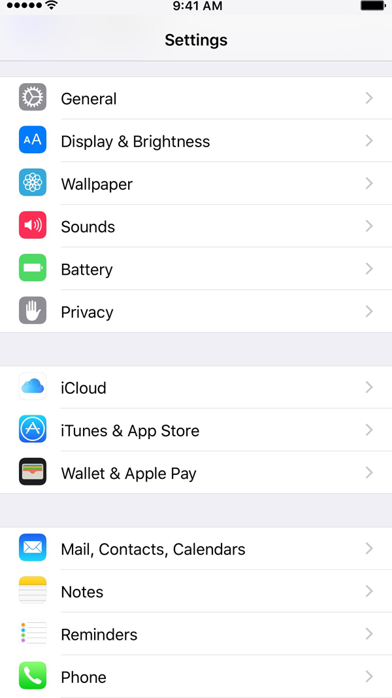

General Settings
The Settings app provides settings for a wide variety of iOS functions, including those previously mentioned, third-party apps, and more.

iOS 9 Settings
Try to find the following settings on your iOS device. (Some settings are in different locations in iOS 8 and earlier.)
Click to reveal the answer.
Text Size
Settings > Display & Brightness > Text Size
Sort order for contacts
Settings > Mail, Contacts, Calendars
Reset options for the device
Settings > General > Reset